4.8 Organic Chemistry Carboxylic Acids · Topic 15C and 15D
Carboxylic acids, acyl chlorides, esters and polyesters
4.8 Organic Chemistry Carboxylic Acids · Topic 15C and 15D
本页严格按 Pearson Edexcel International Advanced Level Chemistry specification 的 15C: Carboxylic acids 和 15D: Carboxylic acid derivatives 编排，主要依据项目内的 4.8 Organic Chemistry Carboxylic Acids.pdf.pdf。解释采用中文，专业词汇保留 English，便于和 specification、reaction conditions 及 exam wording 对照。
Learning objectives
学完本章后，你应该能够：
- name carboxylic acids、acyl chlorides 和 esters，并画 structural、displayed 和 skeletal formulae；
- explain hydrogen bonding 对 carboxylic acids 的 boiling temperature 和 solubility 的影响；
- prepare carboxylic acids by oxidation of primary alcohols / aldehydes and hydrolysis of nitriles；
- describe carboxylic acid 与 LiAlH4、bases、PCl5 和 alcohols 的 reactions；
- explain acyl chloride 与 water、alcohols、concentrated ammonia 和 amines 的 reactions；
- compare acidic and alkaline hydrolysis of esters；
- explain condensation polymerisation 形成 polyesters，例如 Terylene / PET。
15C.1 Carboxylic acids and nomenclature
Carboxyl functional group
Carboxylic acids 含有 carboxyl functional group \(\ce{-COOH}\)，general formula 可写成 \(\ce{RCOOH}\)。Naming pattern 是 alkan + oic acid：
- \(\ce{HCOOH}\)：methanoic acid；
- \(\ce{CH3COOH}\)：ethanoic acid；
- \(\ce{CH3CH2COOH}\)：propanoic acid。
Carboxyl carbon 永远是 carbon 1，因此名称中通常不需要 locant。常见 historical names 也可能出现，例如 methanoic acid = formic acid，ethanoic acid = acetic acid。
考试中要能在 molecular formula、structural formula、displayed formula 和 skeletal formula 之间转换。
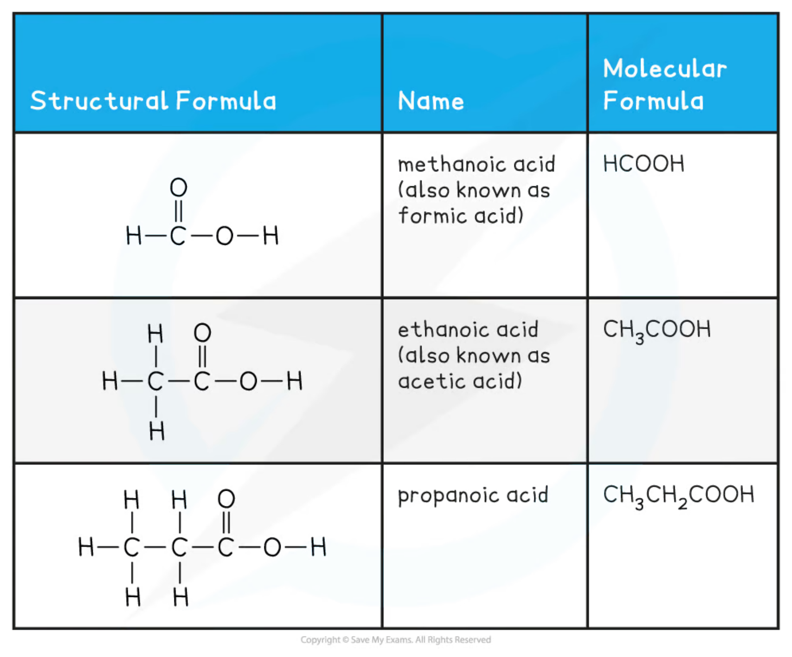
15C.2 Physical properties
Hydrogen bonding and boiling temperature
Carboxylic acids 有两个 polarised bonds：\(\ce{C=O}\) 和 \(\ce{O-H}\)。其中 \(\ce{O-H}\) 使 molecules 之间形成 strong hydrogen bonds，有时还会形成 hydrogen-bonded dimers。
因此，相对分子质量相近的 organic compounds 中，carboxylic acids 通常有 relatively high melting temperatures 和 boiling temperatures。它们的 intermolecular forces 包括：
- hydrogen bonding；
- permanent dipole-dipole interactions；
- London forces。
Solubility in water
Short-chain carboxylic acids 可以与 water 形成 hydrogen bonds，因此通常 soluble in water。Hydrocarbon chain 变长后：
- non-polar chain 破坏 water-water hydrogen bonds；
- chain 本身不能提供足够强的 hydrogen bonding；
- hydrophobic part 的影响逐渐超过 carboxyl group 的 hydrophilic effect。
所以 solubility 随 chain length 增加而下降。含有超过约 eight carbon atoms 的 carboxylic acids 在 room temperature 通常是 solids，并且在 cold water 中 only slightly soluble。
15C.3 Preparation of carboxylic acids
Oxidation of primary alcohols and aldehydes
Oxidation to a carboxylic acid
Primary alcohols 和 aldehydes 都可以被 oxidised 为 carboxylic acids。常用 conditions：
- acidified potassium dichromate(VI)，\(\ce{K2Cr2O7 / H2SO4}\)；或
- acidified potassium manganate(VII)，\(\ce{KMnO4 / H+}\)；
- heat under reflux，使 volatile organic compounds 不会逸出并可继续 oxidation。
两步可写成：
\[ \ce{RCH2OH + 2[O] -> RCOOH + H2O} \]
\[ \ce{RCHO + [O] -> RCOOH} \]
Dichromate(VI) 的 orange \(→\) green colour change，或 manganate(VII) 的 purple \(→\) colourless change，可作为 oxidising agent 被还原的 evidence。
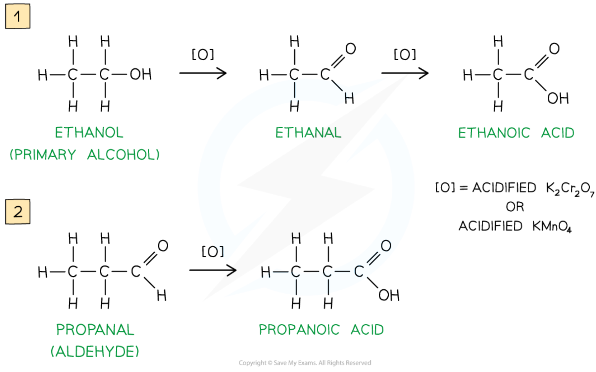
Hydrolysis of nitriles
Converting a nitrile group to a carboxyl group
Nitrile hydrolysis 会把 terminal \(\ce{-CN}\) 转换为 \(\ce{-COOH}\)，因此 chain 中 carbon number 增加一个。可以使用：
Dilute acid route
\[ \ce{RCN + 2H2O + HCl -> RCOOH + NH4Cl} \]
生成 carboxylic acid 和 ammonium salt。
Dilute alkali route：先形成 carboxylate salt 和 ammonia，再 acidification：
\[ \ce{RCN + NaOH + H2O -> RCOO^-Na^+ + NH3} \]
\[ \ce{RCOO^-Na^+ + HCl -> RCOOH + NaCl} \]
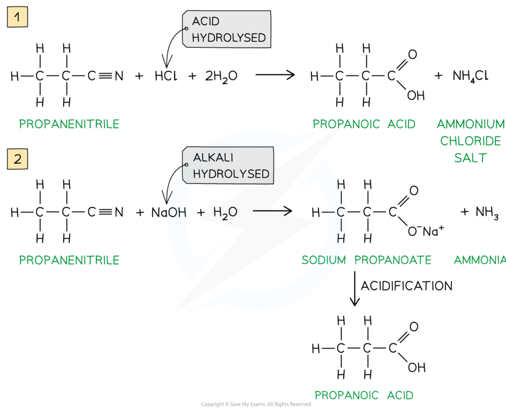
15C.4 Reactions of carboxylic acids
Weak-acid behaviour
Carboxylic acids 在 water 中只 partial ionisation，因此是 weak acids：
\[ \ce{RCOOH(aq) <=> RCOO^-(aq) + H+(aq)} \]
Equilibrium position lies to the left，\([\ce{H+}]\) 相对较小，但仍足以与 carbonates 和 hydrogencarbonates 反应并释放 carbon dioxide。
与 sodium hydrogencarbonate 的 ionic equation：
\[ \ce{RCOOH + HCO3^- -> RCOO^- + CO2 + H2O} \]
Observation 是 effervescence / fizzing of \(\ce{CO2}\)；这可用于检验 carboxylic acid。
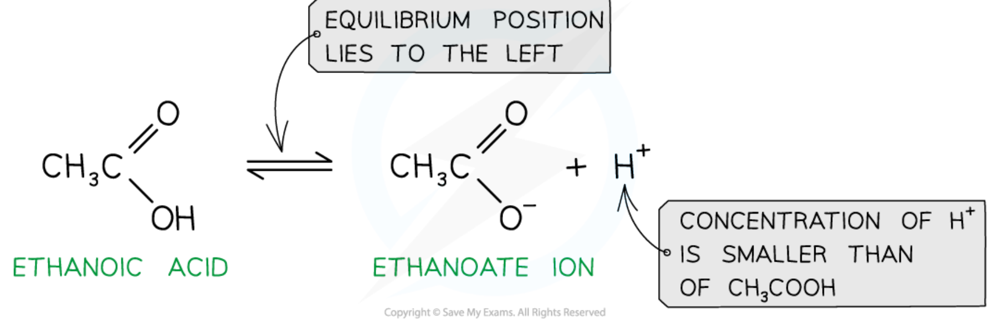
Reduction with lithium tetrahydridoaluminate(III)
Lithium tetrahydridoaluminate(III)，也称 lithium aluminium hydride，formula \(\ce{LiAlH4}\)，在 dry ether (ethoxyethane) 中将 carboxylic acids reduced 为 primary alcohols：
\[ \ce{RCOOH + 4[H] -> RCH2OH + H2O} \]
例如：
\[ \ce{CH3CH2COOH + 4[H] -> CH3CH2CH2OH + H2O} \]
Reaction 后加入 water 可 destroy excess LiAlH4。这里的 \(\ce{[H]}\) 是 reducing equivalent，不是要求实际加入的 free hydrogen atom。
Reactions with bases and formation of salts
Carboxylic acids 与 bases 发生 neutralisation，形成 carboxylate salts：
\[ \ce{RCOOH + NaOH -> RCOO^-Na^+ + H2O} \]
与 metal oxide 反应还可生成 salt 和 water；与 reactive metal 可生成 salt 和 hydrogen；与 carbonate / hydrogencarbonate 生成 salt、water 和 carbon dioxide。
例如：
\[ \ce{2CH3COOH + MgO -> (CH3COO)2Mg + H2O} \]
\[ \ce{2CH3COOH + Na2CO3 -> 2CH3COONa + H2O + CO2} \]
Reaction with phosphorus(V) chloride
Carboxylic acid 与 solid phosphorus(V) chloride（\(\ce{PCl5}\)）反应，\(\ce{-OH}\) 被 chlorine 替代，生成 acyl chloride：
\[ \ce{CH3CH2COOH + PCl5 -> CH3CH2COCl + POCl3 + HCl} \]
Observation 是 steamy fumes of hydrogen chloride。Liquid products 可用 fractional distillation 分离。
Esterification with alcohols
Carboxylic acid 与 alcohol 在 concentrated sulfuric acid catalyst 下发生 esterification，形成 ester 和 water。这是 condensation reaction，通常需要 heat / reflux：
\[ \ce{RCOOH + R'OH <=>[H2SO4] RCOOR' + H2O} \]
Ester name 的 first part 来自 alcohol，second part 来自 carboxylic acid：
- propan-1-ol + ethanoic acid \(→\) propyl ethanoate；
- ester 通常有 sweet / fruity smell。
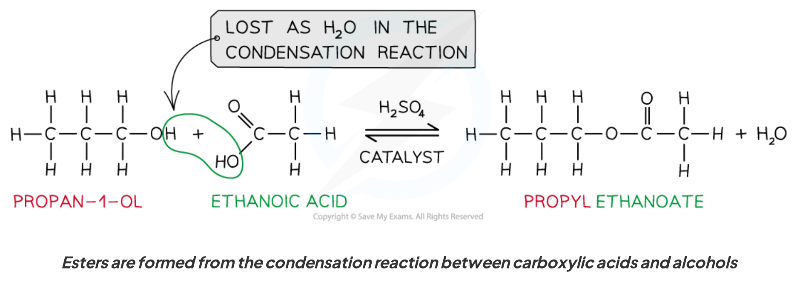
15D.1 Acyl chlorides and esters
Naming carboxylic acid derivatives
Acyl chloride 是 carboxylic acid 的 \(\ce{-OH}\) 被 chlorine 替代后的 derivative，general formula \(\ce{RCOCl}\)。Naming 使用 parent chain + -oyl chloride：
- ethanoic acid \(→\) ethanoyl chloride；
- propanoic acid \(→\) propanoyl chloride；
- butanoic acid \(→\) butanoyl chloride。
Ester 的 general formula 是 \(\ce{RCOOR'}\)，其中 carbonyl-containing part 来自 acid，\(\ce{-OR'}\) part 来自 alcohol。命名为 alkyl alkanoate，例如 ethyl propanoate。
Acid anhydrides 也属于 carboxylic acid derivatives，但本 Topic 的 assessed nomenclature focus 是 acyl chlorides 和 esters。
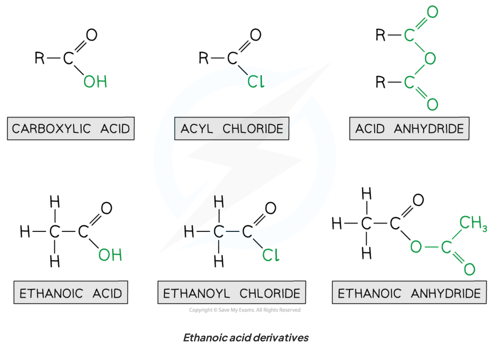
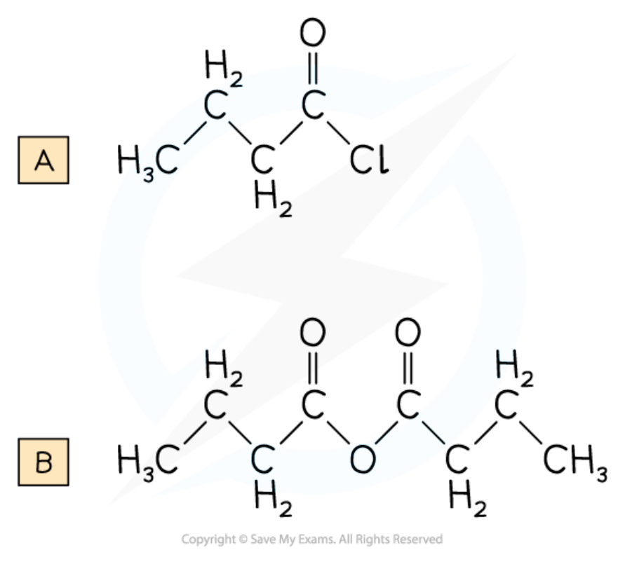
Nucleophilic addition-elimination
Acyl chlorides 很 reactive，因为 \(\ce{Cl^-}\) 是 good leaving group。反应通常经历 nucleophilic addition-elimination：
- nucleophile 的 lone pair attack carbonyl carbon；
- carbonyl \(π\) bond electrons move to oxygen，形成 tetrahedral intermediate；
- carbonyl re-forms，同时 \(\ce{Cl^-}\) 被 eliminated；
- proton transfer 生成 final product 和 HCl / ammonium salt。
这套 mechanism 适用于 acyl chloride 与 water、alcohol、ammonia 和 amines 的 reactions。
15D.2 Reactions of acyl chlorides
Hydrolysis with water
Acyl chloride 与 water rapidly hydrolyses，形成 carboxylic acid 和 hydrogen chloride：
\[ \ce{RCOCl + H2O -> RCOOH + HCl} \]
例如：
\[ \ce{CH3CH2COCl + H2O -> CH3CH2COOH + HCl} \]
这是 nucleophilic addition-elimination reaction；通常会观察到 acidic fumes / solution。
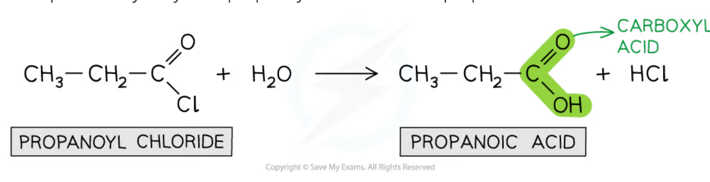
Reaction with alcohols: ester formation
Acyl chloride 与 alcohol 反应形成 ester，并 eliminate HCl：
\[ \ce{RCOCl + R'OH -> RCOOR' + HCl} \]
例如：
\[ \ce{CH3CH2COCl + CH3CH2OH -> CH3CH2COOCH2CH3 + HCl} \]
与 carboxylic acid + alcohol 的 esterification 相比，acyl chloride reaction 更 reactive，通常不需要 concentrated acid catalyst。
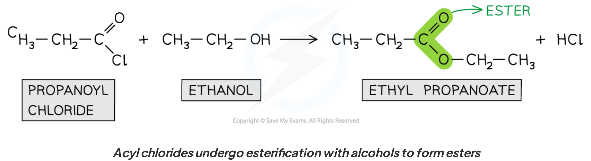
Reaction with ammonia and amines: amide formation
Acyl chloride 与 concentrated ammonia 反应，生成 primary amide：
\[ \ce{RCOCl + 2NH3 -> RCONH2 + NH4Cl} \]
其中一个 ammonia molecule 是 nucleophile，另一个 neutralises HCl。
与 primary amine \(\ce{R'NH2}\) 反应，生成 N-substituted amide：
\[ \ce{RCOCl + 2R'NH2 -> RCONHR' + R'NH3Cl} \]
例如 propanoyl chloride 与 methylamine 形成 N-methylpropanamide。
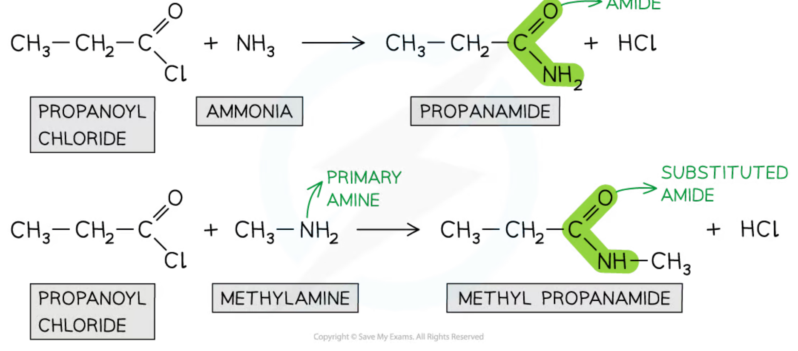
15D.3 Hydrolysis of esters
Acid hydrolysis
Ester hydrolysis 是 esterification 的 reverse reaction。With dilute acid（例如 dilute \(\ce{H2SO4}\) 或 \(\ce{HCl}\)），heat under reflux：
\[ \ce{RCOOR' + H2O <=>[dilute\ acid] RCOOH + R'OH} \]
Reaction 是 reversible，建立 equilibrium，通常不会 go to completion。Products 是 carboxylic acid 和 alcohol。
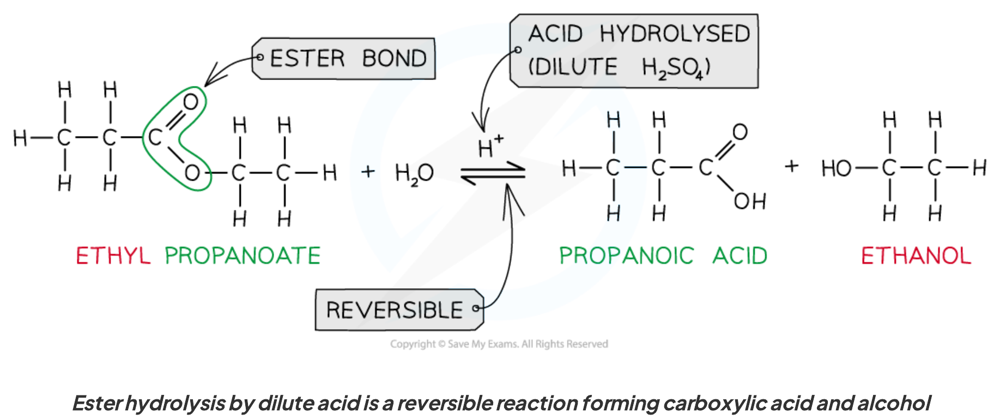
Alkaline hydrolysis / saponification
With dilute alkali（例如 aqueous \(\ce{NaOH}\)），heat under reflux：
\[ \ce{RCOOR' + NaOH -> RCOO^-Na^+ + R'OH} \]
Reaction 是 effectively irreversible，可 go to completion。Product 是 sodium carboxylate salt 和 alcohol；如果要得到 free carboxylic acid，需要再 acidification：
\[ \ce{RCOO^-Na^+ + HCl -> RCOOH + NaCl} \]
这个 alkaline ester hydrolysis 也叫 saponification。
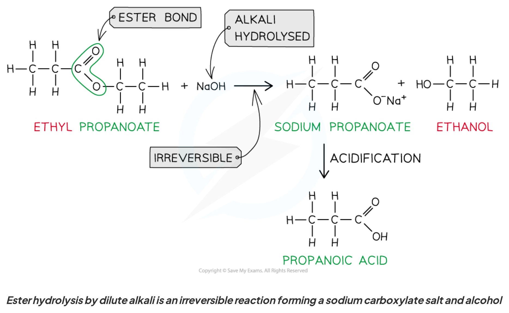
Acid vs alkaline ester hydrolysis
| Feature | Acid hydrolysis | Alkaline hydrolysis |
|---|---|---|
| Conditions | dilute acid, heat, reflux | dilute alkali, heat, reflux |
| Reaction direction | reversible equilibrium | effectively irreversible |
| Organic products | carboxylic acid + alcohol | carboxylate salt + alcohol |
| Further treatment | no required acidification | acidification gives carboxylic acid |
写 equation 时要看题目是 asking for direct product under alkaline conditions，还是 asking for the carboxylic acid after acidification。
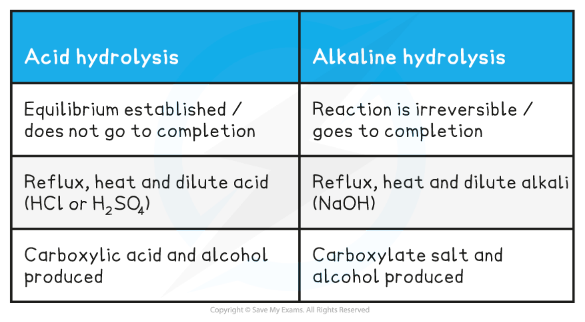
15D.4 Condensation polymerisation: polyesters
Diol + dicarboxylic acid
Condensation polymerisation 是许多 monomers 通过 repeated condensation reactions 连接，生成 polymer，同时每次 linkage 形成时 eliminate a small molecule，通常是 water。
要形成 polyester，需要：
- a diol，有 two \(\ce{-OH}\) groups；
- a dicarboxylic acid，有 two \(\ce{-COOH}\) groups。
例如 ethane-1,2-diol 与 benzene-1,4-dicarboxylic acid（terephthalic acid）形成 poly(ethylene terephthalate)，即 PET，也称 Terylene / Dacron。Monomers 通过 ester links 连接。
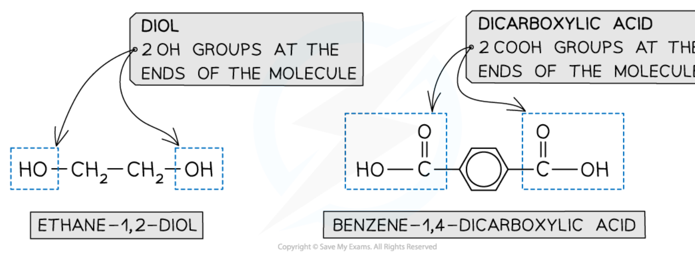
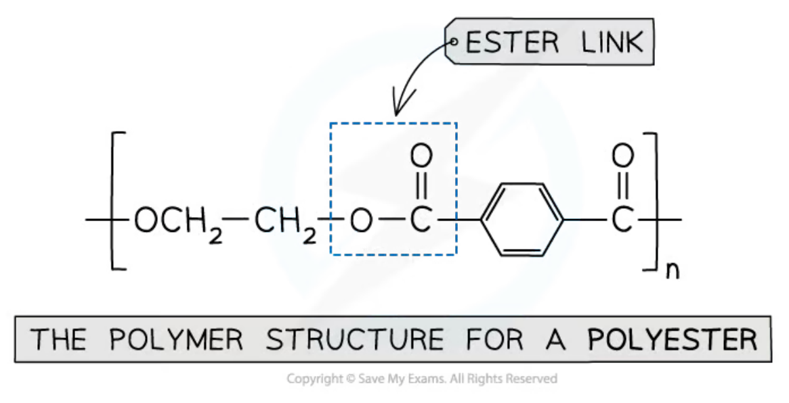
PET formation and repeating unit
PET formation is a condensation process：每形成 one ester link，就 lose one molecule of water。Drawing polymer structure 时要：
- 找出两个 monomers 的 functional groups；
- remove \(\ce{-OH}\) from carboxylic acid 和 one H from alcohol；
- join carbonyl carbon to oxygen，形成 \(\ce{-COO-}\) ester link；
- 在 polymer chain 两端使用 continuation bonds，并用 square brackets / \(n\) 表示 repeating unit。
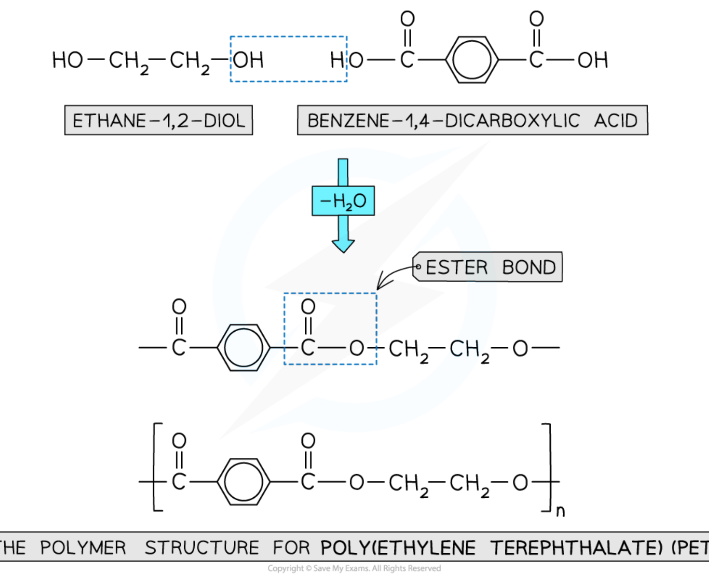
Hydroxycarboxylic acid monomer
也可以使用一个 molecule 同时带有 alcohol group 和 carboxylic acid group 的 hydroxycarboxylic acid。例如 2-hydroxybutanoic acid 既有 \(\ce{-OH}\) 又有 \(\ce{-COOH}\)，能够 self-condense，形成含 ester links 的 polyester，并在每次 condensation 时 eliminate water。
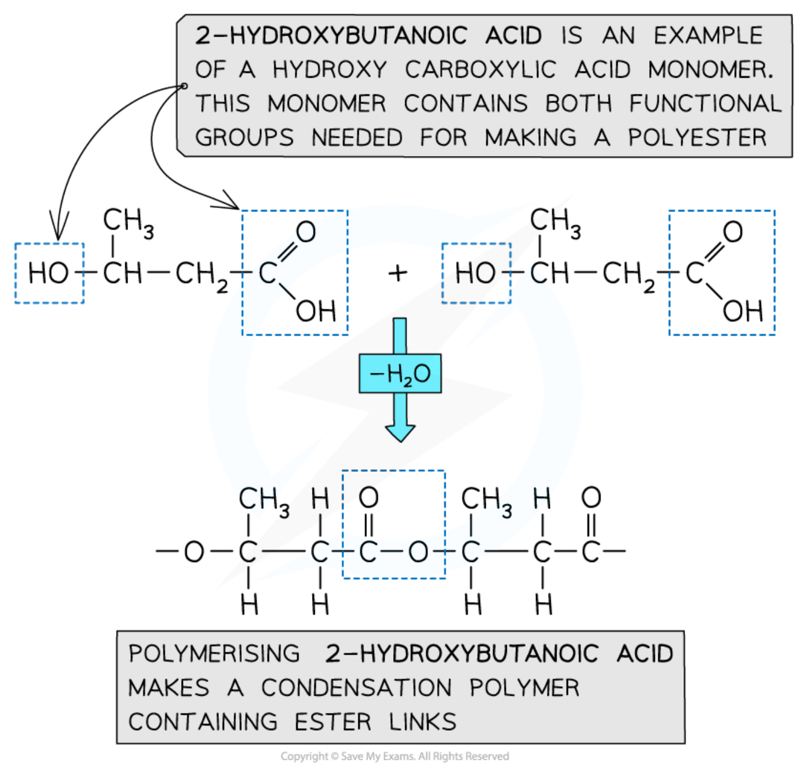
Exam checklist
Source note
本页面对应：Note per Chapter/Note per Chapter/4.8 Organic Chemistry Carboxylic Acids.pdf.pdf；考纲范围对应 International-A-Level-Chemistry-Spec 的 15C: Carboxylic acids（15.9–15.12） 和 15D: Carboxylic acid derivatives（15.13–15.16）。页面中的示意图均从本章 note 独立提取并保存到 assets/notes/carboxylic-acids/，便于单独放大和复用。